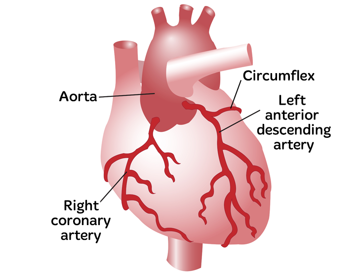

Coronary artery disease (CAD)

SYMPTOMS:
- chest pain or discomfort
-
a feeling of pressure or squeezing in the chest
-
shortness of breath
-
nausea
-
feelings of indigestion or gas
CAUSES:
- The most common cause of CAD is vascular injury with cholesterol plaque buildup in the arteries, known as atherosclerosis. Reduced blood flow occurs when one or more of these arteries becomes partially or completely blocked.